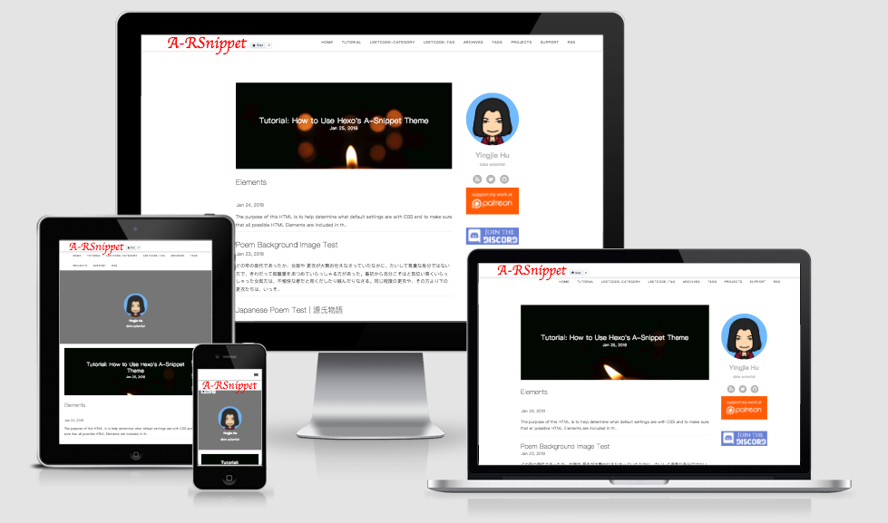
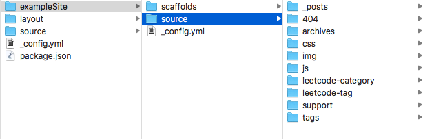

The goal of A-RSnippet theme is to be comprehensive.


Overview
The goal of Hexo A-RSnippet theme is to achieve as many functionalities as possible. There are many features on my todo list. For example, there will be more than one style to show your projects on the portfolio page.
If you like A-RSnippet theme, please star the repo ⭐️ . It is the easiest way to support me.
You can get updated for each new version release if you subscribe to the newsletter.
Live Website

- Official Hexo A-RSnippet theme website
- Please fork the repo and add your site here.
Features
- Bootstrap
- Fully responsive: smartphone, tablet, laptop, to desktop computer
- Images
- Tables
- Responsive YouTube and Vimeo videos
- Comments - Disqus
- Analytics - Google, Baidu Analytics.
- Webmaster verification
- Bing
- Yandex
- Code Syntax Highlight
- Table of Contents
- Custom Single Page
- Pages
- Tags page
- Project Portfolio page
- A list to show a specific category or tag for LeetCode problem list
- Support Latex through MathJax
- Cover image for posts and pages
- Sharing - addthis
- Navigation menu
- Social Accounts configuration (more in the future)
Documentation
Please go to http://arsnippet.yingjiehu.com/tutorial for the latest tutorial.
Installation
cd root_of_site_foldergit clone https://github.com/huyingjie/hexo-theme-A-RSnippet.git themes/a-rsnippet- Replace
_config.ymlin the root folder of the website with_config.ymlin thea-rsnippettheme folder.
Update Theme
Steps
Execute the following command to update the theme.
1
2cd themes/a-rsnippet
git pullCompare the
_configfile the theme and your site_configfile and edit when necessary.- Modify the version number in your
_configfile.
Quick Start
- Copy the content of
sourcefolder in theexampleSitefolder to yoursourcefolder - Create a new post:
hexo new post "post name" - Create a new page:
hexo new page "page name" - Run the website:
hexo serverorhexo s
Code for An Example Website
There is an exampleSite folder in the theme folder.

The scaffolds folder contains files with empty front-matter of all layouts used on the site.
You can copy the files and folders in the exampleSite folder to your root of the website.
External Libraries Used
Customize the Theme
Every time you change something in the _config file, run hexo s again.
Every time you change something in the source folder, run hexo g && hexo s.
Please try not editing code in the theme as hard as you can.
Replacing the theme folder is the only way to update any Hexo theme. If you edit any file in the theme folder, it will not be easy for you to update A-RSnippet theme in the future.
If you want to customize the theme, please try using following methods. There is an example site in the theme folder.
Use external libraries included in the theme.
Use HTML and CSS to add Bootstrap style directly to the posts. MarkDown does not support adding classes.
Use Font Awesome 4 to add icons in the posts
Add additional JavaScript and CSS to the
arsnippet.cssandarsnippet.jsrespectively. Their positions are as follows:1
2
3
4
5
6your_site_folder
| -- source
| -- css
| -- arsnippet.css
| -- js
| -- arsnippet.jsYou can see the example in the
exampleSitefolder.Add additional images
- Create a folder inside the
sourcefolder Add any image file inside the folder
Example:
1
2
3
4your_site_folder
| -- source
| -- img
| -- cover-image.pngThe same logic can be applied to most types of files.
For HTML files, an additional step should be done: add the filenames in
skip_render:in the_configfile.Access the files using
/folder_name/filename.extension, such as/img/cover-image.pngThe first
/is required because it represents the root path of the site.
- Create a folder inside the
Contribution
Thank you for all contributors. Without your help, everything cannot move fast, smooth, and easy.
There are several ways you can help:
- Star A-RSnippet GitHub Repo
Submit your custom layout
Example:
- project portfolio
- category
tag
Please put CSS and JS into your layout ejs files.
Please use the filename format
categoryLayout-name.Assuming I want to create a post layout with the name
elegant. The filename for the ejs file ispost-elegant.ejs.categoryLayoutcan be one of the following:index
- post
- page
- tag
- category
- poem
- portfolio
Fix any typo and grammar error
My native language is Chinese, not English. Please help.
- Report issue
- Help people on the forum and Discord
Existing Bugs
list-category-leetcode layout
I used
site.categories.findOne({name: page["search_word"]}).posts.sort('title', 1).each(function(post) {}to get the posts for a specified categories. There are two bugs that I don’t know how to solve.- You must use
["language", "python"]format for thecategoriesin the front matter. Otherwise, the post does not appear in the list. - Hyphen (
-) cannot be included in the category names.
- You must use
Thanks
The theme cannot exist without reference to other themes.
- Anisina theme which is from Hux theme : The design is beautiful. A-RSnippet theme used its design.
- NexT theme and Landscape theme: When I don’t know how to achieve some functionality, I will search source code for both themes. They are awesome.
- 184 themes on the official Hexo website. I spent around 12 hours on reading read all themes and wrote down which feature I wanted to add in the future.
Getting Help
There are two main places to get help with A-RSnippet theme:
Except for a private channel on Discord, please use English only.
If you want to use languages other than English, please use the following format:
[your language in English] xxxx
[English] yyy
Example:
[Chinese] 除了一个Discord私人频道(你可以通过Patreon加入), 在论坛和Discord里发言只允许使用英文.
[English] Except a private Discord channel (you can join in via Patreon), all discussions on the forum and Discord must use English only.
Learning A-RSnippet Theme
- Tutorial
- Future: Youtube Channel
Style Test Reference for Each Layout
post Layout & LeetCode Layout
-
heading, paragraph, link blockquote, list, form, table, abbr, acronym, sub, sup, image, Math formula, video (YouTube, Vimeo), jsfiddle, gist
- Long title
- 中文简体测试 | Chinese (Simplified) Test
- 中文繁體測試 | Chinese (Traditional) Test
- 日本語テスト | Japanese Test
- Cover image
- the number on Table of Contents disabled
- Comments
- LeetCode
-
- page Layout
- tag Layout
- archive Layout
- poem Layout
- portolio-slim Layout
- list-category-leetcode Layout
- list-tag-leetcode Layout
- 404 Layout
Reporting Issues
-
This is the only method to report issues. Please go to forum or Discord to seek for help except issues and feature request.
Donate & Support
Thank you for choosing A-RSnippet theme.
Before creating the A-RSnippet theme, I was angry that themes were not easy to modify and source code was hard to understand.
Now I will not do it anymore. I spent several days to finish the first version. Writing documentation required more days. It taught me that every theme requires a big amount of time to complete and every authors’ effort should be respected.
Simplicity does not mean easy or not complicated.
NexT theme seems to conform to minimalism. It has lots of functionalities and customization. It is not easy.
The goal of the theme is to contain as many features as possible. Hence, this is not a simple theme. For example, there will be more than one layout to present project portfolio. Please submit your layout if it is different from mine. There are more features on the way. It will take me a lot of time.
If you like A-RSnippet theme and/or appreciate my time dedicated to the theme, please give a tip to support the development of the theme.
There are four ways:
Star the repo.
-
GitHub issue section is for issues or future features only. All seek-for-help activity should take place in the forum or Discord.
For people who don’t donate through Patreon:
If you ask a question via Discord, you must use English and write a post in English in the forum to show how you solve the problem. You must send me the link to the post. Otherwise, I will not answer your question(s) in the future.
For people who donate through Patreon:
You will automatically join in a private Discord chatroom. You can ask me any question there.
There are some benefits:
- You can suggest any feature you want. I will create a poll of a list of features to be developed after each release. The polls are shown only to you. The top items will be taken care of first.
- You can ask me questions in Chinese or English in the private channel on Discord.
- You will not be obliged to write a post in English in the forum. I will do it for you.
- Gumroad (one-time)
Translation
Adding new features, fixing bugs, answering questions in the forum and Discord will take me an enormous amount of time. Hence, I decided to give up maintaining Chinese documentation. If you want to translate it into other languages, please feel free to do it. You can add a link here after completion.
Change Log
Change Log is on yingjehu.com.
License
GNU General Public License v3.0


- 1. Overview
- 2. Live Website
- 3. Features
- 4. Documentation
- 5. Installation
- 6. Update Theme
- 7. Quick Start
- 8. Code for An Example Website
- 9. External Libraries Used
- 10. Customize the Theme
- 11. Contribution
- 12. Existing Bugs
- 13. Thanks
- 14. Getting Help
- 15. Learning A-RSnippet Theme
- 16. Style Test Reference for Each Layout
- 17. Reporting Issues
- 18. Donate & Support
- 19. Translation
- 20. Change Log
- 21. License